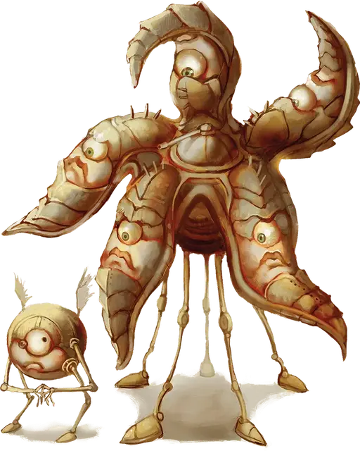

Пентадрон
Pentadrone
Большой Конструкт, законно-нейтральный

Класс Доспеха 16 (природный доспех)
Хиты 32 (5к10 + 5)
Скорость 40 футов
| мод | спас | ||
|---|---|---|---|
| СИЛ | 15 | +2 | +2 |
| ЛОВ | 14 | +2 | +2 |
| ТЕЛ | 12 | +1 | +1 |
| мод | спас | ||
|---|---|---|---|
| ИНТ | 10 | +0 | +0 |
| МДР | 10 | +0 | +0 |
| ХАР | 13 | +1 | +1 |
Навыки Восприятие +4
Чувства истинное зрение 120 футов, пассивное Восприятие 14
Языки Модронский
Опасность 2 (450 опыта)
Бонус мастерства +2
Среда обитания Горы, Побережье
Особенности
Косное сознание. Пентадрона нельзя заставить действовать так, как противоречит его природе или инструкциям.
Распад. Если пентадрон умирает, его тело рассыпается в пыль, оставляя лишь оружие и то, что он нес.
Действия
Мультиатака. Пентадрон совершает пять атак рукой.
Рука. Рукопашная атака оружием: +4 к попаданию, досягаемость 5 футов, одна цель. Попадание: Дробящий урон 5 (1к6 + 2).
Парализующий газ (перезарядка 5–6). Пентадрон выдыхает газ 30-футовым конусом. Все существа в этой области должны преуспеть в спасброске Телосложения Сл 11, иначе станут парализованными на 1 минуту. Существо может повторять этот спасбросок в конце каждого своего хода, оканчивая эффект на себе при успехе.
Описание
Пентадроны управляют рабочим населением Механуса и могут импровизировать в ответ на непредвиденные изменения ситуации.
См. дополнительно статью: "Бестиарий: Модроны"